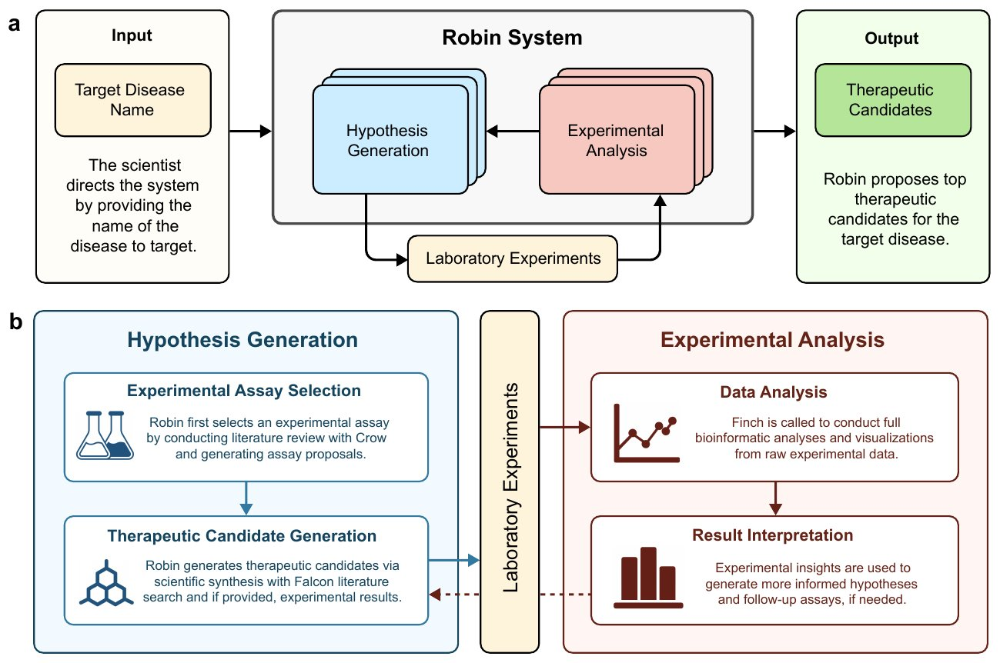
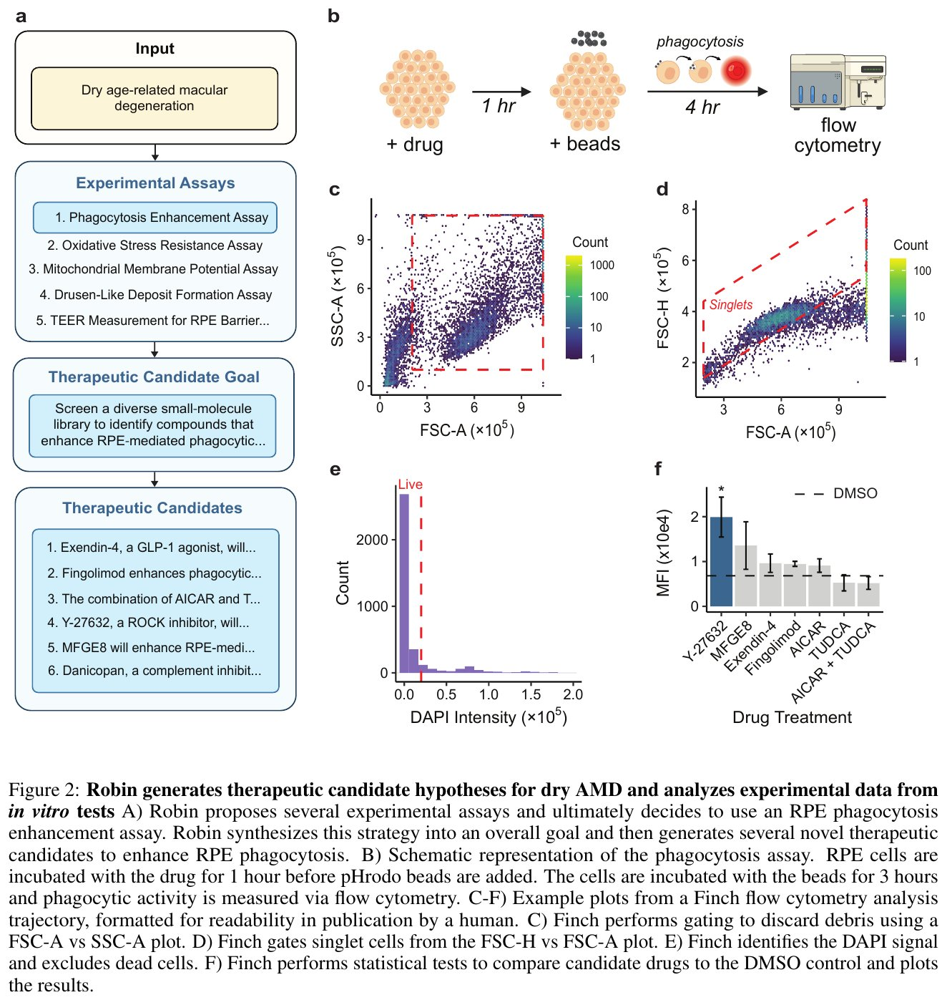
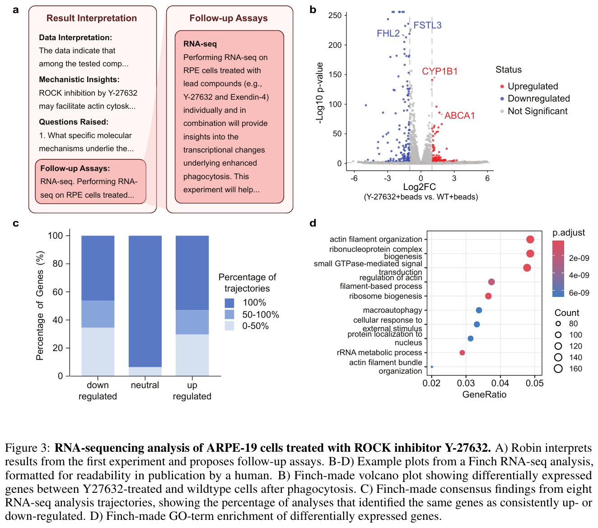
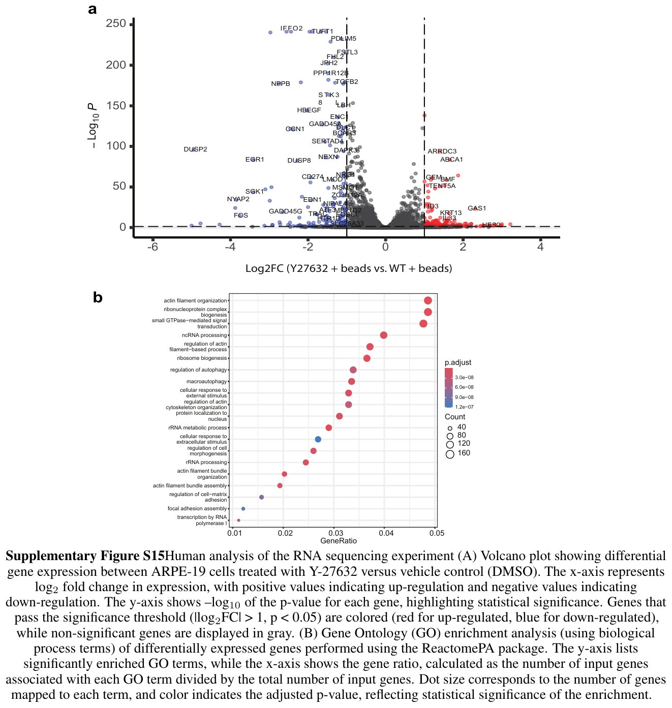
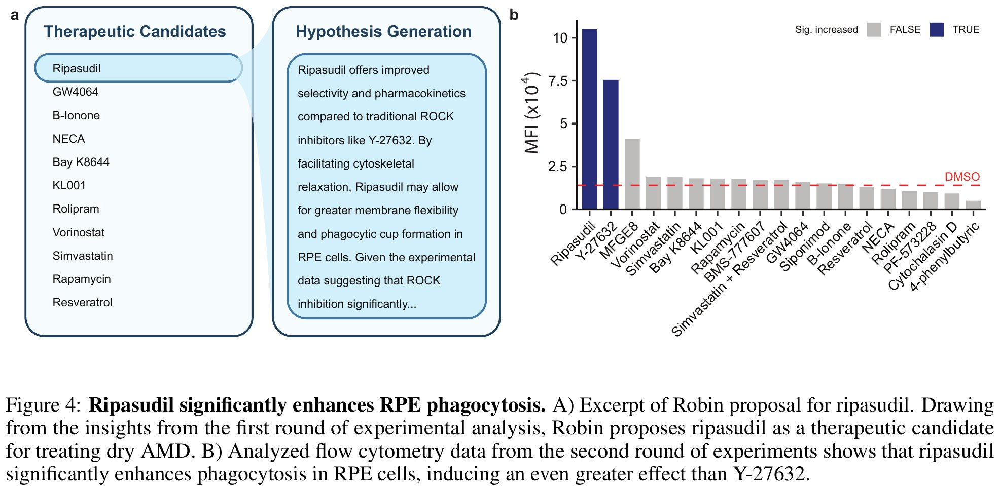

ROBIN: A Multi-Agent System for Automating Scientific Discovery
想象一位科学家的工作流程：阅读文献找灵感 → 提出假设 → 设计实验 → 做实验 → 分析数据 → 根据结果修改假设 → 再做实验……ROBIN 是第一个将所有这些智力步骤全部自动化的 AI 系统。它就像一个不知疲倦的科研助手——读完几百篇论文、提出治疗候选药物、分析实验数据、并根据实验结果给出下一轮建议。
过去几年，AI 在科学发现的单个环节（如文献检索、假设生成、数据分析）都取得了进展，但没有人将所有这些环节连接成一个闭环系统。ROBIN 首次实现了：
| 术语 | 全称 | 说明 |
|---|---|---|
| ROBIN | — | 本文提出的多智能体科学发现系统 |
| dAMD | dry Age-related Macular Degeneration | 干性年龄相关性黄斑变性，发达国家主要致盲原因 |
| RPE | Retinal Pigment Epithelium | 视网膜色素上皮细胞，dAMD的关键病变细胞类型 |
| ROCK | Rho-associated Kinase | Rho相关激酶，ROCK抑制剂（如Y-27632、ripasudil）通过调节细胞骨架影响吞噬功能 |
| Crow | — | ROBIN的文献检索智能体（基于PaperQA2），执行简洁文献综述 |
| Falcon | — | ROBIN的深度文献检索智能体（基于PaperQA2），生成候选药物详细评估报告 |
| Finch | — | ROBIN的数据分析智能体（基于Aviary框架），自主执行流式细胞术和RNA-seq分析 |
| BTL | Bradley-Terry-Luce Model | 用于从成对比较中估计实力参数的统计模型 |
| LLM Judge | Large Language Model Judge | 用LLM对假设进行成对比较并排名的"评委" |
衡量、干扰和建模生物系统的能力在过去几十年飞速增长，导致了科学知识的"爆炸"。但理解、综合和从这些知识中提炼新假设的能力却远远落后。打个比方：我们有了一个不断膨胀的巨型图书馆，但却没有足够多的图书馆员来帮你找到不同书架上的书之间隐藏的联系。
论文以几个经典案例展示了"知识就在文献中、却迟迟未能转化为治疗"的困境：
| 药物 | 核心机制已知时间 | 新用途发现时间 | 滞后 |
|---|---|---|---|
| Dabrafenib（BRAF抑制剂） | 2010年 | 2020年（防听力损失） | ~10年 |
| Ketamine（氯胺酮） | ~1978年 | 2000年（抗抑郁） | ~22年 |
| Leucovorin（亚叶酸） | 2008年 | 2013年（自闭症） | ~5年 |
将已获批或已进入临床试验的药物用于新的治疗适应症。优势在于：(1) 安全性已有数据；(2) 可大幅缩短开发周期和降低失败风险。ROBIN 的核心应用场景正是药物重利用——从已有知识中发现"隐藏的"药物-疾病关联。
目前已有多款 AI 系统用于科学发现的不同环节：SciMon（假设验证）、Coscientist（化学实验）、The AI Scientist（论文生成）、AI Co-scientist（假设生成）等。但没有一个系统能够覆盖完整的科学发现闭环：
ROBIN 的创新在于：首次将文献检索假设生成 + 实验数据分析 + 结果驱动的假设迭代整合为一个连续的自动化工作流，并通过真实实验室实验验证了其发现。
可以把 ROBIN 想象成一个由三位专家组成的虚拟科研团队：一位"图书管理员"（Crow）快速查阅文献回答问题，一位"深度研究员"（Falcon）撰写详尽的候选药物评估报告，一位"数据分析师"（Finch）在 Jupyter Notebook 里写代码分析实验数据。ROBIN 作为"项目经理"，协调这三位专家的工作，并把结果反馈给下一轮假设生成。
下面的原论文图 1 给出了 ROBIN 的总体架构：从输入疾病名称到输出治疗候选药物的完整工作流，以及三个智能体在其中的分工。

原论文 Figure 1：ROBIN 系统的架构与工作流。(a) 系统总览：科学家只需提供目标疾病名称，ROBIN 生成假设并筛选出最优治疗候选递交实验室测试，再自主分析原始实验数据、综合科学洞见并更新下一轮治疗假设。(b) 内部工作流：假设生成（由 Crow 做文献综述、提出实验方案并经 ROBIN 选定）→ 治疗候选生成（基于 Falcon 的深度文献科学综合，可选结合已有实验结果）→ 实验室实验 → 实验数据分析（调用 Finch 从原始数据做完整生信分析与可视化）→ 结果解读（用实验洞见指导下一轮假设与后续实验）。(c) 三个智能体的职责分工：Crow 做简明文献综述以确定实验策略与候选药物；Falcon 做深度文献检索、为每个候选生成评估报告；Finch 自主分析实验数据，为下一轮假设生成提供洞见。
图源：Ghareeb et al., arXiv preprint (2025)。
| 智能体 | 技术基础 | 核心能力 | 论文中的使用规模 |
|---|---|---|---|
| Crow | PaperQA2 | 简洁文献综述、回答特定科学问题 | 检索约400篇论文 |
| Falcon | PaperQA2 | 深度文献搜索、生成候选药物详细评估报告 | 为每个候选药物生成评估报告 |
| Finch | Aviary + ReAct | 自主生物信息学分析（流式细胞术、RNA-seq） | 10条独立分析轨迹 |
原论文图 2 以 dAMD 为例，把"假设生成"（本节）与"实验数据分析"（2.3 节）连成一条完整证据链——从实验方案枚举、候选药物生成，一直到 Finch 对第一轮流式数据的分步门控分析。

原论文 Figure 2：ROBIN 为干性 AMD 生成治疗候选假设并分析体外实验数据。(a) ROBIN 假设生成的产物节选：先枚举多个候选体外实验方案（图中列出吞噬增强、氧化应激抵抗、线粒体膜电位、玻璃膜疣样沉积形成、RPE 屏障 TEER 测量 5 种），经 LLM 评委排序选定 RPE 吞噬增强实验；随后把策略综合为总体目标（筛选能增强 RPE 吞噬的小分子），并生成候选药物清单（图中节选 Exendin-4、Fingolimod、AICAR+TUDCA、Y-27632、MFGE8、Danicopan 等，全文共 30 个）。(b) 吞噬实验示意图：RPE 细胞先与药物孵育 1 小时，加入 pHrodo 微珠后再共孵育 3 小时，最后用流式细胞术定量吞噬活性。(c–f) Finch 一条流式分析轨迹的示例图（由人类整理排版以利阅读）：(c) FSC-A/SSC-A 散点图圈门排除细胞碎片；(d) FSC-H/FSC-A 图圈选单细胞；(e) 根据 DAPI 荧光排除死细胞；(f) 对候选药物与 DMSO 对照做统计检验，柱状图显示各组平均荧光强度（MFI），星号标注与对照的显著差异。
图源：Ghareeb et al., arXiv preprint (2025)。
Step 1：疾病机制枚举 —— ROBIN 生成10个疾病因果机制假设，Crow 对每个机制做文献综述
Step 2：实验策略选择 —— 生成候选体外实验方案，LLM评委两两比较排序，选出最佳方案
Step 3：候选药物生成 —— 基于选定实验策略，从~400篇文献中提出30个候选药物
Step 4：Falcon 深度评估 —— 为每个候选药物生成详细报告（机制、证据、局限）
Step 5：LLM 评委排序 —— 两两比较（Bradley-Terry模型），产生最终排名
Step 6：人类科学家审核 —— 选择前N个候选药物进入实验室测试
Finch 的核心创新在于多轨迹共识策略。由于生物数据分析本身具有歧义性（例如流式细胞术的圈门策略），Finch 对同一数据集启动 10条独立分析轨迹，每条轨迹独立执行 Jupyter Notebook 分析。最终通过元分析（meta-analysis）综合所有轨迹结果，得出共识驱动的结论——仅将超过50%轨迹一致认为显著的基因纳入最终结果。这种方法既探索了分析多样性，又保证了结论的稳健性。
给定压缩的 .fcs 文件和元数据表，Finch 自主：(1) 使用 fcsparser 解析原始数据；(2) 通过 FSC-A/SSC-A 散点图排除细胞碎片；(3) 基于 FSC-H/FSC-A 选出单个细胞；(4) 排除 DAPI 阳性死细胞；(5) 统计各药物处理组的 Alexa Fluor 647 平均荧光强度；(6) 使用 Dunnett 检验比较各处理组与 DMSO 对照；(7) 生成带显著性标记的柱状图。
论文以干性年龄相关性黄斑变性（dAMD）——发达国家不可逆性失明的主要原因——为概念验证案例。ROBIN 从零开始（仅给定疾病名称），自主完成了从理解疾病机制、选择实验策略、提出候选药物、分析实验数据、到根据结果提出新一轮候选药物的完整科学发现循环。整个过程宛如一个不知疲倦的博士后，只不过它是由三个AI智能体组成的系统。
ROBIN 首先检索并综述了151篇论文，提出了10种 dAMD 疾病机制及对应的体外实验方案。经过 LLM 评委排序，RPE细胞吞噬功能增强实验被选为最优策略。
视网膜色素上皮（RPE）细胞的一个重要功能是吞噬并降解光感受器外节——这是维持视网膜健康的日常"清洁工作"。在 dAMD 患者中，RPE 吞噬功能下降被认为是关键病理机制之一。实验使用pHrodo 荧光微珠替代光感受器外节：微珠在溶酶体的低pH环境中被激活发出荧光，通过流式细胞术检测单个细胞的荧光信号来定量吞噬活性。
ROBIN 随后部署 Crow 进行了约400篇论文的文献综述，综合后提出30个候选药物。经过 Falcon 深度评估和 LLM 评委锦标赛，前5名候选药物进入实验室测试：Exendin-4、Fingolimod、MFGE8、Y-27632、AICAR+TUDCA。
在体外 RPE 吞噬实验中，ROCK 抑制剂 Y-27632 显著增强了 RPE 细胞的吞噬能力。这一发现与已有文献一致——此前有研究表明 Y-27632 可恢复"低吞噬"RPE细胞的吞噬效率。但值得注意的是，ROBIN 是第一个将 ROCK 抑制与 dAMD 治疗的吞噬增强策略联系起来的系统——它从文献中合成了这个新颖的关联，而非简单地复述已有知识。
确认 Y-27632 的吞噬增强效应后，ROBIN 解读了第一轮实验结果，并自主提议对 Y-27632 处理的 RPE 细胞做 RNA-seq——这正是 3.2 节转录组机制探究的起点。原论文图 3 完整记录了从结果解读、后续实验提议到分析产出的全过程。

原论文 Figure 3：ROCK 抑制剂 Y-27632 处理 ARPE-19 细胞的 RNA-seq 分析。(a) ROBIN 对第一轮实验结果解读的节选：从吞噬实验数据中提炼机制洞见（ROCK 抑制可能通过肌动蛋白细胞骨架重塑发挥作用），提出待答问题（吞噬增强背后的分子机制是什么），并自主提议后续实验——对 Y-27632 和 Exendin-4 单独及联合处理的 RPE 细胞进行 RNA-seq。(b) Finch 绘制的火山图：比较 Y-27632 处理组与对照细胞在吞噬后的差异表达基因，横轴 log2 倍数变化、纵轴 −log10(p 值)，红色=上调、蓝色=下调、灰色=不显著；右上角的 ABCA1 正是正文所述上调 3 倍、校正 p 值 2.13×10-83 的关键基因。(c) 8 条独立分析轨迹的共识结果：按"多少比例的轨迹一致鉴定该基因为上/下调"（100%、50–100%、0–50% 三档）统计基因分布，只有超过半数轨迹一致显著的基因才被纳入最终结论。(d) 差异表达基因的 GO 功能富集气泡图：横轴基因比率、点大小代表基因数、颜色代表校正 p 值——肌动蛋白纤维组织、核糖体生物合成、巨自噬调控等通路显著富集，与 ROCK 抑制的细胞骨架机制一致。
图源：Ghareeb et al., arXiv preprint (2025)。
在分析第一轮实验结果后，ROBIN 主动提议进行 RNA-seq 实验来探究 Y-27632 增强吞噬功能的转录组机制——这不是人类预先设计的，而是由 AI 根据实验洞察自主提出的。
Finch 的差异基因表达分析发现，Y-27632 处理导致 ABCA1 基因上调3倍（调整后 p=2.13×10-83）。ABCA1 是一个关键的脂质外排泵，对于健康的RPE功能至关紧要——它负责将胆固醇和磷脂从质膜主动转运至受体蛋白后被排出细胞。值得注意的是，ABCA1 与已知的黄斑变性治疗靶点 ABCA4 属于同一转运蛋白家族。
作为 Finch 自主分析的"人类对照"，论文作者以人工方式对同一 RNA-seq 数据集独立完成了差异表达与富集分析（补充图 S15），用于交叉核对 AI 分析结论的可靠性。

原论文 Supplementary Figure S15：人类分析的 RNA-seq 差异表达与 GO 富集。(a) 火山图：比较 Y-27632 处理与 DMSO 对照的 ARPE-19 细胞，横轴为 log2 倍数变化（正值上调、负值下调），纵轴为 −log10(p 值)；越过显著性阈值（|log2FC| > 1，p < 0.05）的基因以红色（上调）/蓝色（下调）着色，不显著者为灰色。图中可见大量基因显著变化，其中 ABCA1 即正文 3.2 节所述上调 3 倍的核心靶基因。(b) 基因本体（GO）生物学过程富集分析（ReactomePA 软件包）：横轴为基因比率（富集到的输入基因数/总输入基因数），点大小代表基因数，颜色深浅代表校正 p 值——肌动蛋白纤维组织、核糖体生物合成、巨自噬调控、细胞对外部刺激的反应等条目显著富集，与 ROCK 抑制重塑细胞骨架的机制解读一致。
图源：Ghareeb et al., arXiv preprint (2025), Supplementary Information。
ABCA1 的上调是否为 Y-27632 处理的特异性反应，还是任何显著增强吞噬能力的干预都会引起的普遍性转录变化？这需要进一步实验来区分。
基于第一轮实验结果，ROBIN 进行了第二轮候选药物生成，并测试了10种新药物。Finch 的分析显示：
| 药物 | 类型 | 吞噬增强倍数 | 现状 |
|---|---|---|---|
| Ripasudil | ROCK抑制剂 | 7.5倍（vs DMSO） | 已在日本获批用于青光眼 |
| Y-27632 | ROCK抑制剂（研究用） | 显著增强 | 研究工具化合物 |
Ripasudil 的表现优于 Y-27632，且具有更好的选择性和药代动力学特性。最令人兴奋的是：Ripasudil 已在日本获批用于青光眼（眼部给药），其安全性已得到验证——这对 dAMD 治疗而言意味着可以大大加速临床转化路径。
原论文图 4 直接呈现了第二轮发现的证据：左侧是 ROBIN 为 ripasudil 撰写的候选提案节选，右侧是 Finch 对第二轮流式数据的分组统计结果。

原论文 Figure 4：Ripasudil 显著增强 RPE 吞噬。(a) ROBIN 第二轮假设生成的提案节选：基于第一轮实验的洞见，ROBIN 认为 ripasudil 相比传统 ROCK 抑制剂（如 Y-27632）具有更好的选择性和药代动力学特性，通过促进细胞骨架松弛可增强膜灵活性与吞噬杯形成，故提出将其作为 dAMD 治疗候选。(b) Finch 对第二轮实验流式数据的分析柱状图：纵轴为平均荧光强度（MFI，反映 pHrodo 微珠吞噬量），柱体按与 DMSO 对照的显著性着色（Sig. increased: TRUE/FALSE）；ripasudil 组 MFI 最高——达 DMSO 对照的 7.5 倍，且超过 Y-27632，是已测化合物中效果最强的吞噬增强剂。
图源：Ghareeb et al., arXiv preprint (2025)。
假设你有30个候选药物，怎么选出最好的5个去实验室测试？ROBIN 的答案是：让 AI 扮演"评审委员会"，对每对候选药物进行两两PK，就像网球锦标赛一样——赢的晋级、输的淘汰。最终通过统计模型（Bradley-Terry）计算出每个候选药物的"实力分数"，排出名次。
BTL模型假设每个候选药物 i 有一个隐藏的"实力参数" $\beta_i$，则候选 i 在成对比较中胜过候选 j 的概率为：
$$P(i > j) = \frac{e^{\beta_i}}{e^{\beta_i} + e^{\beta_j}}$$
通过所有成对比较的结果，使用最大似然估计可以得到每个候选药物的实力参数，进而给出排序。
假设 ROBIN 对 3 个候选药物（A = Y-27632, B = Ripasudil, C = 对照化合物）进行了 LLM 评委的两两比较，得到以下胜负记录：
| 对阵 | 胜者 | 结果 |
|---|---|---|
| A vs B | B 胜 | Ripasudil 的机制证据更直接（已有临床安全性数据） |
| A vs C | A 胜 | Y-27632 有 RPE 吞噬实验的预数据支撑 |
| B vs C | B 胜 | 同上，Ripasudil 综合评分更高 |
第一步：写出似然函数。BTL 模型中，每对比较的胜负概率完全由 $\beta_A, \beta_B, \beta_C$ 三个实力参数决定。给定上述结果（B 胜 A、A 胜 C、B 胜 C），总似然为：
$$ L = P(B \gt A) \times P(A \gt C) \times P(B \gt C) = \frac{e^{\beta_B}}{e^{\beta_B} + e^{\beta_A}} \times \frac{e^{\beta_A}}{e^{\beta_A} + e^{\beta_C}} \times \frac{e^{\beta_B}}{e^{\beta_B} + e^{\beta_C}} $$第二步：最大似然估计。取对数后求偏导并令其为零（通常用迭代算法如 Newton-Raphson 或 MM 算法求解），得到估计值。为便于理解，这里展示一种近似直觉——BTL 模型中 $\beta_i$ 近似于第 $i$ 个候选的"对数胜率"：
| 候选药物 | 估计的 $\beta_i$ | 排名 | 解释 |
|---|---|---|---|
| B（Ripasudil） | 1.10 | 🥇 #1 | 全胜——实力参数最高，进入实验室测试 |
| A（Y-27632） | 0.00（参照基线） | 🥈 #2 | 一胜一负——实力居中，备选 |
| C（对照化合物） | -1.10 | 🥉 #3 | 全败——实力参数最低，暂不进入测试 |
第三步：从"实力参数"到"胜率预测"。将 $\beta$ 值带回 BTL 公式，可以预测任意对阵的理论胜率：
$$ P(\text{Ripasudil} \gt \text{Y-27632}) = \frac{e^{1.10}}{e^{1.10} + e^{0.00}} = \frac{3.00}{3.00 + 1.00} = \mathbf{75\%} $$即模型预测：如果再次让 LLM 评委比较这两个药物，Ripasudil 有 75% 的概率胜出。这比简单的"B 赢了 A 一次"给出了更丰富的信息——它量化了优势大小。
与 ROBIN 实际流程的对应：论文中，30 个候选药物并非仅比较 3 对，而是进行了完整的锦标赛（所有可能的成对组合），并由 LLM 评委对每一对给出胜负判断。BTL 模型从这些海量 PK 结果中统一估计出 30 个 $\beta$ 值并排名，最终人工选择前 N 名（论文中为前 5 名）进入实验室验证。模型的优势在于：
LLM 评委的高自评一致性（88%）既是优势也是潜在风险——它可能反映了对某些措辞或呈现方式的系统性偏好，而非真正甄别科学质量。这一倾向可能限制了真正的"创新性"假设被选中的概率。
| 局限 | 具体影响 |
|---|---|
| 未生成精确可执行实验方案 | 仍需人类科学家将ROBIN的建议翻译为详细实验步骤 |
| Finch依赖领域专家提示工程 | 数据分析质量受初始提示设计影响较大 |
| 工作流实际已趋于确定性 | 虽然设计为智能体架构，但实际调用序列几乎固定，最终被翻译为确定性Jupyter Notebook |
| LLM评委可能偏好包装精美的假设 | 提示文案质量可能影响排序，而非纯科学依据 |
| 单疾病验证 | dAMD只是概念验证，跨疾病泛化能力仍需更多验证 |
ROBIN 展示了 AI 驱动的假设生成与实验迭代闭环，但其知识来源限于文献和数据库中的已有信息——无法从原始序列数据中de novo发现新的调控机制。McAnany et al. (2026) — PISA 从互补方向填补了这一空缺：通过深度学习模型直接从 DNA 序列中解读顺式调控密码，以碱基分辨率可视化转录因子 motif 的影响范围、发现此前被隐藏的调控序列、并利用遗传算法设计可实验验证的序列突变。ROBIN 的"知识驱动发现"与 PISA 的"数据驱动机制解读"代表了 AI 辅助科学发现的两个正交维度——将两者整合，有望实现从原始基因组序列到候选药物靶点的全自动管道。
过去十年，FDA每年批准约50种新药，这一数字停滞不前。而全球有超过10,000种已知疾病——按这个速度，需要200年才能覆盖所有疾病。ROBIN 代表的 AI 驱动药物重利用方法，有潜力大幅加速这个过程：不是从头发现新分子，而是从已有药物中发现新用途——将历史数据中的隐藏关联转化为可测试的假设。
ROBIN 是世界上第一个"从论文中读到灵感，提出假设，分析实验数据，并根据结果改进假设"的全自动AI科学家——虽然它还不完美，但它代表了科学发现自动化的重要一步。最令人震撼的不是它发现了什么，而是它如何发现的：通过阅读文献、推理机制、比较候选方案，最终到达了一个人类专家可能多年后才能到达的结论。